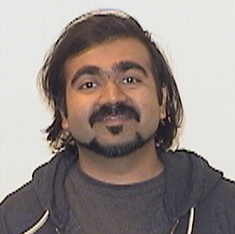
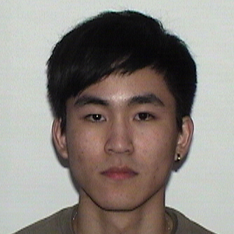
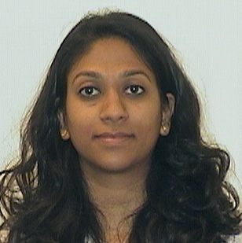
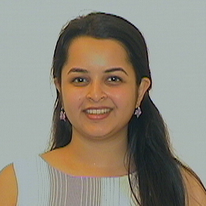
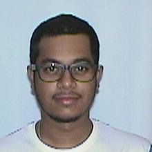
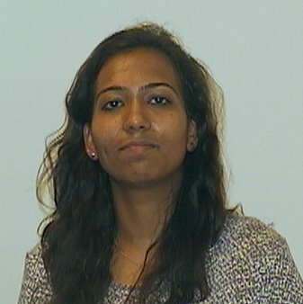

General

Teaching Assistants
Aditi Kacheria
Aishwarya Joshi
Artem Pelenitsyn
Mohit Chandarana

I-Farn Chen

Kanika Rana

Mitali Shroff

Srinivasa Vijay Bhaskar Vemuri

Sahithi Vankayalapati



Communication: To ensure prompt replies use Piazza for all class communication. By default use private notes labeled with your section number and instructor or TA. Questions will be answered by the first available staff member. We guarantee a 24 hours turn around in the worst case, and often much less.
Clinics: Time and Location: The office hours for SwDv (all sections and all staff members) are in the Khoury Library (WVH 102).
Mon: 1-4pm
Tue: 12-3pm
Wed: 12-3pm
Thu: 1-4pm
Fri: 12-3pm
Clinics will manned by TAs and instructors. For questions outside of clinics, use Piazza. Piazza is monitored between 4pm and 8pm each week day.
Organization: The course is a "studio" course, a concept that originated in art schools. In a studio course, the instructor presents basic techniques, discusses domain knowledge for specific projects, and then teaches with the help of student presentations.
Coding is all about comprehending code. Doing well with this task demands tremendous practice. Hence when your peers present code, it is critical for you to read, understand, and analyze their explanations and justifications: their problem analysis, their interface design, their component design, and their code. The presenters will learn to communicate about products to a team, to defend their design decisions, and to get help with weak spots. Conversely, the listeners will learn to analyze and to critique a product, helping the presenter uncover flaws.
Final Code Walks: In lieu of a final, we will conduct an extensive code walk of your projects. If the course progresses on schedule, the final code walks will be held during the finals examination period. If the course progresses faster than anticipated, all final code walks will take place during the final week of classes.
Grades: To earn an A in this class you need 950 points. The number of points available is 1160 – this means you can be late on four assignments and still get an A. (There is no late policy, you can use your extra points for anything.) There are three warmup exercise (w1-w3), six assignments (a1-a6), five project milestones (p1-p5), 2 code reviews, 2 pannels, and 1 final code walk. The points for each are: w1=10, w2=20, w3=30, a?=50, p?=50, cr?=125, pan?=50, fcw=200.
Regrade policy: If you have questions or doubts regarding the feedback you have received, post a private question on Piazza. Any request for regrading has to be submitted via Piazza within 2 days of when feedback was released.
The instructors are known to use the entire scale of grades, from A+ to F-.